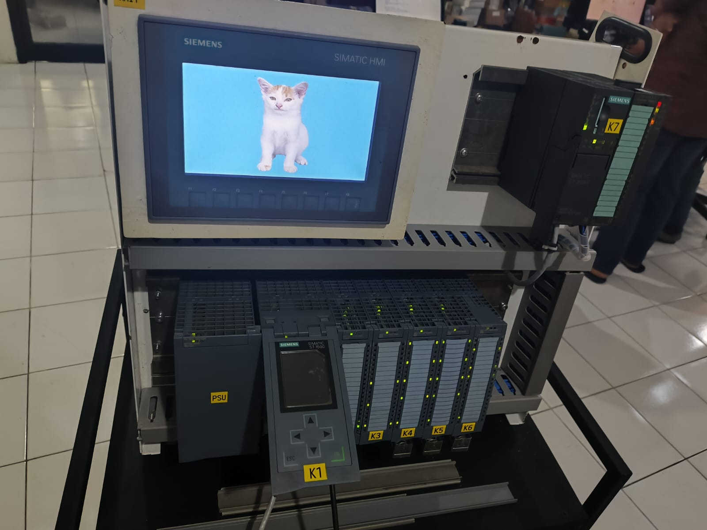

Membawa Otomasi Industri ke Demo Nyata dengan PLC
Visualisasi Sistem Kontrol Real-Time dengan Siemens S7-1500 🤖

Dalam dunia industri, sistem otomasi sering kali terlihat kompleks dan sulit divisualisasikan—terutama bagi customer yang ingin memahami bagaimana sebuah sistem benar-benar bekerja. Tidak cukup hanya dengan diagram atau penjelasan teori.
Proyek ini hadir untuk menjawab tantangan tersebut dengan merancang sebuah demo module berbasis PLC Siemens S7-1500, yang mampu menampilkan proses otomasi secara langsung, real-time, dan mudah dipahami.
⚙️ Sekilas tentang PLC Siemens S7-1500
PLC seperti Siemens S7-1500 merupakan “otak” dari sistem otomasi industri. Dalam modul ini, PLC digunakan untuk mengontrol berbagai input dan output—mulai dari sensor hingga aktuator—dengan logika yang diprogram melalui TIA Portal.
Demo module ini dirancang untuk menunjukkan bagaimana:
- Input dari sensor diproses oleh PLC
- Logika kontrol dijalankan secara real-time
- Output mengendalikan aktuator sesuai kondisi sistem
🔌 Apa yang Ditampilkan dalam Demo Module?
Modul ini bukan hanya sekadar rangkaian, tetapi sebuah sistem otomasi mini yang lengkap, meliputi:
- Input digital → push button, limit switch, atau sensor
- Output digital → lampu indikator, relay, atau aktuator
- Sistem kontrol PLC → logika berbasis program
- Integrasi penuh → semua komponen bekerja dalam satu sistem
Dengan pendekatan ini, customer dapat langsung melihat bagaimana proses otomasi berjalan tanpa harus membayangkan dari teori saja.
🛠️ Peran Saya dalam Proyek
Saya terlibat secara end-to-end dalam pengembangan modul ini—mulai dari desain hingga pengujian sistem.
📐 1. Desain Wiring (EPLAN)
Saya merancang skema wiring menggunakan EPLAN Electric P8 dengan fokus pada struktur yang rapi, sesuai standar industri, serta mudah dipahami untuk kebutuhan troubleshooting dan presentasi.
🔧 2. Manufaktur Modul
Proses ini mencakup perakitan panel, instalasi PLC, terminal, dan perangkat pendukung, serta pengkabelan sesuai desain. Kerapian dan ketelitian menjadi faktor utama karena modul juga berfungsi sebagai alat demonstrasi profesional.
⚙️ 3. Pengujian & Validasi Sistem
Setelah perakitan, dilakukan pengujian untuk memastikan semua input terbaca dengan benar, output merespon sesuai logika program, serta sistem berjalan stabil secara real-time.
🚀 Kenapa Modul Ini Penting?
- ✅ Mempermudah presentasi sistem otomasi ke customer
- ✅ Memberikan visualisasi nyata, bukan hanya teori
- ✅ Menjadi alat uji fungsi sebelum implementasi
- ✅ Menunjukkan keandalan dan fleksibilitas PLC
🌟 Penutup
Proyek ini merupakan kombinasi antara engineering design, manufaktur, dan pemrograman sistem kontrol. Lebih dari sekadar membuat panel, ini adalah tentang menghidupkan konsep otomasi dalam bentuk yang dapat dilihat, diuji, dan dipahami secara langsung.
Dengan pendekatan seperti ini, PLC tidak lagi terasa abstrak—melainkan menjadi solusi nyata yang bisa langsung dirasakan manfaatnya dalam dunia industri.